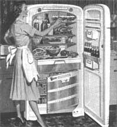

Advice on taming a notorious energy guzzler
Your refrigerator may be the largest electricity consumer in your home. Considering that nationally, electricity costs on average 10 cents per kilowatt hour, all but the newest, most efficient refrigerators will take about $100 to 150 out of your pocket annually to operate. From an energy standpoint, you can conserve the most simply by replacing your existing refrigerator or freezer with a new model. And if your fridge is 15 years old or older, it may be so inefficient that a new one would pay for itself in energy savings in just a few years. But because refrigerators are so expensive and your old one is no doubt still operating, buying a new one - may not be a possibility. Yet reducing large electricity bills is still possible, and all you need to spend is a little time and effort. Here are a few tips on how to boost your refrigerator's energy efficiency:
When the condenser coils become caked with dust and dirt, the build up acts as an insulator preventing adequate heat transfer between the coils and the room air. Unplug the refrigerator and dust or vacuum these coils (usually located on the back of the refrigerator or behind the front grill) as dirt accumulates.
Put a dollar bill in the door as you close it; if it is not held firmly in place, the seals are probably defective. With newer magnetic door seals, this test may not work. Instead, darken the room and put a bright 150 Watt flood lamp inside the refrigerator and direct the light toward a section of the door seal. Move the light around the perimeter of the seal; use a mirror to check the seal at the bottom of the door. If light seeps through, contact your dealer in order to replace the seals.
Use an accurate thermometer. The refrigerator should be between 36°F and 38°F, the freezer should be between 0°F and 5°F. Adjust the thermostat control accordingly. Keeping temperatures 10° F lower than recommended levels can increase energy use by as much as 25%.
If your refrigerator is in the sunlight or next to your stove or dishwasher, it has to work harder to maintain cool temperatures. Try to place it in a cooler location and make sure that the air can circulate freely around the condenser coils.
Unless you have noticeable condensation, keep this switch on the energy-saving setting.
If you have a manual or partially automatic defrost feature, you should defrost regularly. The ice build up wastes energy by making the compressor run longer to maintain temperatures. After defrosting, adjust the thermostat to a warmer setting to save even more energy.
1) Let hot foods cool before placing them in the refrigerator or freezer.
2) Cover foods, especially liquids, to prevent moisture from releasing into the refrigerator.
3) Mark items in the freezer for quick i.d. to avoid keeping the door open too long while looking for items.
4) A full freezer will perform better than a nearly empty freezer. If your freezer isn't full, make a lot of ice.
5) If you have a second freezer or refrigerator that you keep for food overflow on festive occasions, turn it off. You will save energy by turning it on only when it is needed. Unplug it and remove the door so children won't be trapped inside accidentally.
From CONSUMER GUIDE TO HOME ENERGY SAVINGS, copyright © 1991, published by the American Council for an Energy-Efficient Economy (ACEEE). Call 510/549-9914 for information.
|
 |
|
|